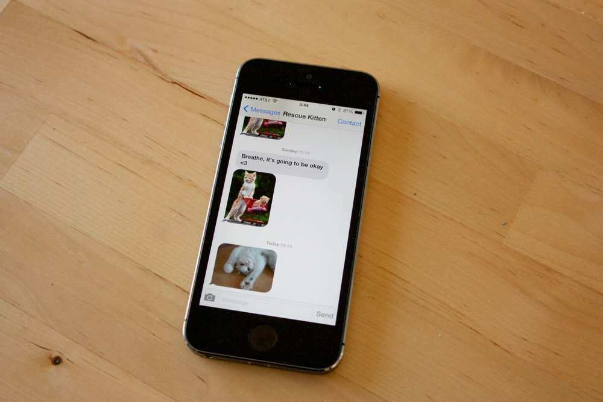
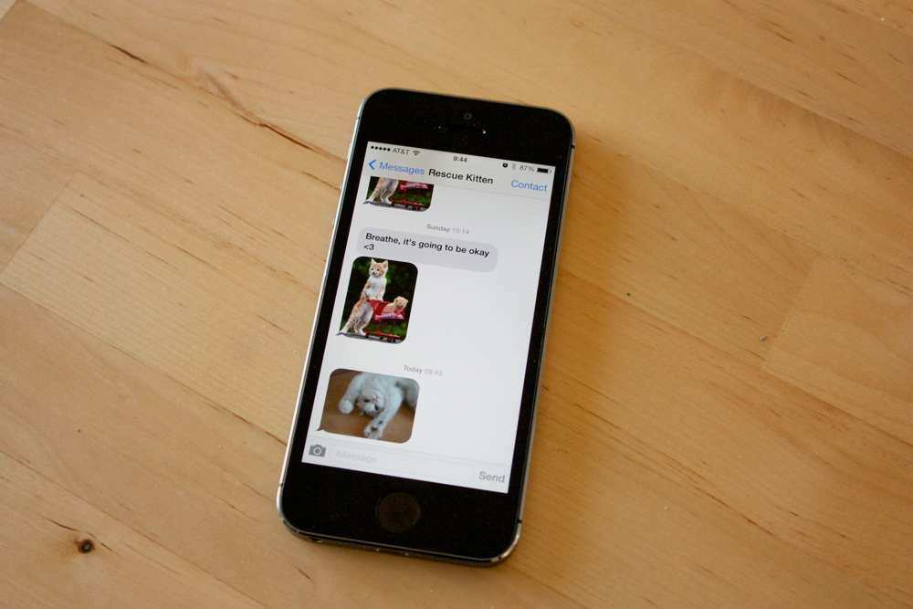

refactoring the dinosaur
- @noopkat -
suz hinton
@noopkat
NYC
front-end dev @ kickstarter

 

Problems
Accessibility
Ugly
No progress reporting
Atmel® ATtiny85
4KB program memory
256B EEPROM memory
6 I/O lines
runs up to 20MHz
EEPROM and prog memory diagram placeholder
I really want to change that
AVRDUDE
AVR Downloader/UploaDEr
avrdude strengths
it works really well
been around a long time
traction++
avrdude limitations
command line only
no tests
fragmented community
creating a NodeJS alternative
there is no hype fatigue here
NodeJS advantages
small family of packages
easier to test
better flexibility for use
more accessible*
AVR General Isp pRogramming tooL
let's play a game
I need a volunteer
choose your fuse
94
123
107
lessons
aka holy crap what was I thinking
use proxyquire
var proxyquire = require('proxyquire');
var usbmock = require('mock-usb');
var avrgirl = proxyquire
.noCallThru()
.load('avrgirl-ispmkii', { 'usb': usbmock });
use sinon.js
test('read fuses', function (t) {
var fuses = 3;
var spyw = sinon.spy(a, 'write');
var spyr = sinon.spy(a, 'read');
a.readFuses(function(error, data) {
t.equals(spyw.callCount, fuses, 'called write for each fuse');
t.equals(spyr.callCount, fuses, 'called read for each fuse');
});
});
there are always exceptions to any rule
github.com
/noopkat/avrgirl
you'll probably brick them
> console.log('thank you');
icon credits
'books' by Andrey Vasiliev from the Noun Project
'trophy' by Dima Lagunov, RU from the Noun Project
'circuit' by Piotrek Chuchla from the Noun Project